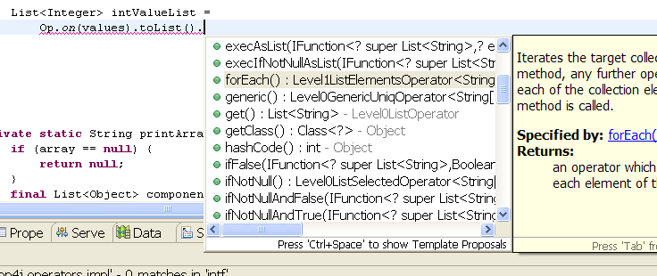

Here are some quick details about what op4j can do:
op4j is used for implementing (mainly) auxiliary code as expressions. Expressions look like this:
output = Op.on(input).[ACTION].[ACTION]...[ACTION].get(); function = Fn.on(inputType).[ACTION].[ACTION]...[ACTION].get();
They start by calling either the Op.on(...) or the Fn.on(...) static methods, which receive the input object (Op.on) or input type (Fn.on) as a parameter. There are some variations of the "on(...)" methods with slightly different names, which are explained in the documentation sections for the specific types of input.
String[] values = ...; List<String> upperStrs = Op.on(values).toList().map(FnString.toUpperCase()).get();
Function<String[],List<String>> upperStrsFunc =
Fn.onArrayOf(Types.STRING).map(FnString.toUpperCase()).toList().get();
...
String[] values = ...;
List<String> upperStrs = upperStrsFunc.execute(values);
Expressions end with get(), which returns the output (op expressions) or the defined function (fn expressions).
An action is a chained method executed in an expression, between the "on(...)" and the "get()" methods.
For example:
String[] values = ...; List<Integer> intValueList = Op.on(values).toList().forEach().exec(FnString.toInteger()).get();
Here we can see three chained actions: toList, forEach and exec.
Operators are the objects representing each of the states of an expression. They are the objects resulting from the execution of actions (or on(...)).
Looking again at our example:
List<Integer> intValueList = Op.on(values).toList().forEach().exec(FnString.toInteger()).get();
We can explain it as:
All operators are immutable. When an action is executed on them, they return a new and different operator representing the new state, instead of changing their own internal state.
The "target" or "targets" of an operator are the objects that the operator's actions (methods) will execute on.
As operators are linked together by actions in the shape of chains, an operator's target is the result of the execution of an action on the previous operator.
Following the previous example:
List<Integer> intValueList = Op.on(values).toList().forEach().exec(FnString.toInteger()).get();
The behaviour of operators in op4j allows the operator system to be thought of as a state machine where operators represent states, and actions represent state changes. Thanks to this:
Each operator offers only the actions (methods) that can effectively be executed in the specific state it represents.
What does this mean? It means for example that, if you execute Op.on(...) on a Set<String> object, you will be offered a forEach() method for iterating it (because Sets can be iterated), but you will not be offered a distinct() method for removing duplicates as would have been offered if your object was a List (because Sets can never contain duplicates).
Another example, the following sentence will not compile:
List<Integer> intValueList = Op.on(values).forEach().forEach()...
After the first forEach(), you are already iterating the input array, so there is no point in iterating it again!
The operator state machine in op4j defines five branches, this is, five sub-machines with almost entirely different sets of operator classes and thus corresponding associated actions.
This allows the special treatment of several kinds of objects by offering specific methods for them, as exemplified above. These five branches are:
Operators in each of these five branches will offer different actions depending on the state of the expression (for example, a set operator will offer forEach() only if this action has not been added to the chain yet, or it has but an endFor() has been called afterwards).
The array operators branch will be activated if:
The list operators branch will be activated if:
The map operators branch will be activated if:
The set operators branch will be activated if:
The generic operators branch will be activated if:
op4j's state machine makes it easy for you to create your expressions by just using the Content assist feature in your IDE (usually by pressing Ctrl+Space after ".") and going through the list of actions (methods) available to you at a specific point in the chain, selecting the one that fits your needs.
Functions are a key concept in op4j. A quick definition:
An op4j function is an object of a class which implements the org.op4j.functions.IFunction interface
The IFunction interface is defined as IFunction<T,R>, being T the type of the function input, and R the type of the function result.
IFunction only has one method, R execute(T input, ExecCtx ctx), which receives a T object and a context (an internal structure containing iteration information) and returns an R object.
All op4j predefined functions, as well as all functions returned by Fn.on expressions extend a special implementation of IFunction<T,R> called Function<T,R>. This class adds a simpler R execute(T input) method, useful for the isolated (not inside an expression) execution of a Function object.
op4j includes more than 200 functions out-of-the-box, and most actions available in operators correspond to the execution of some of these predefined functions. For example, the distinct() action on a set operator created for a Set<String> input corresponds to the internal execution of the predefined FnSet.ofString().distinct() function (which implements IFunction<Set<String>,Set<String>>).
Besides, almost every operator offers the exec(IFunction) action, which can take any function as a parameter and execute it on the operator's target. This means that, with exec(...), you can execute:
These last kind of functions, the ones defined with fn expressions (which are objects of the special Function class), can also be executed by themselves without being part of any other expression:
function = Fn.on(...)...get(); output = function.execute(input);
op4j is tightly integrated with the javaRuntype project, which in fact was born as a part of op4j (later separated as a project on its own during development).
javaRuntype offers a runtime type system which fits perfectly the need op4j has for being able to specify types (for example, of a list's elements) including their type parameters (the so-called generics), which is something not covered by the standard java.lang.Class objects.
javaRuntype's Type objects are extremely easy to use, and are created and managed by means of the org.javaruntype.type.Types class, which in fact contains many useful predefined constants for the most used types.